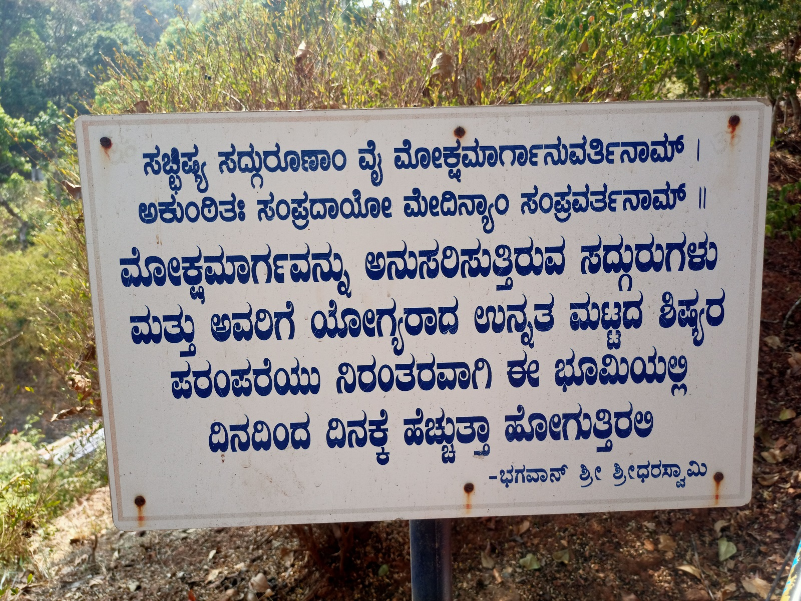
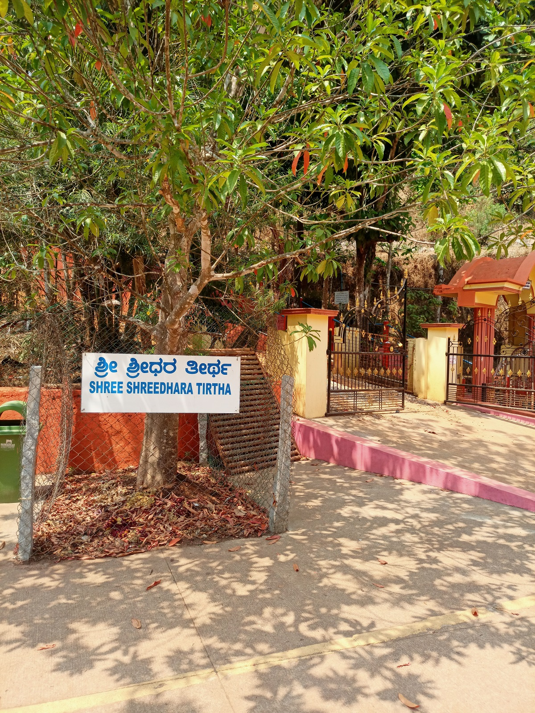
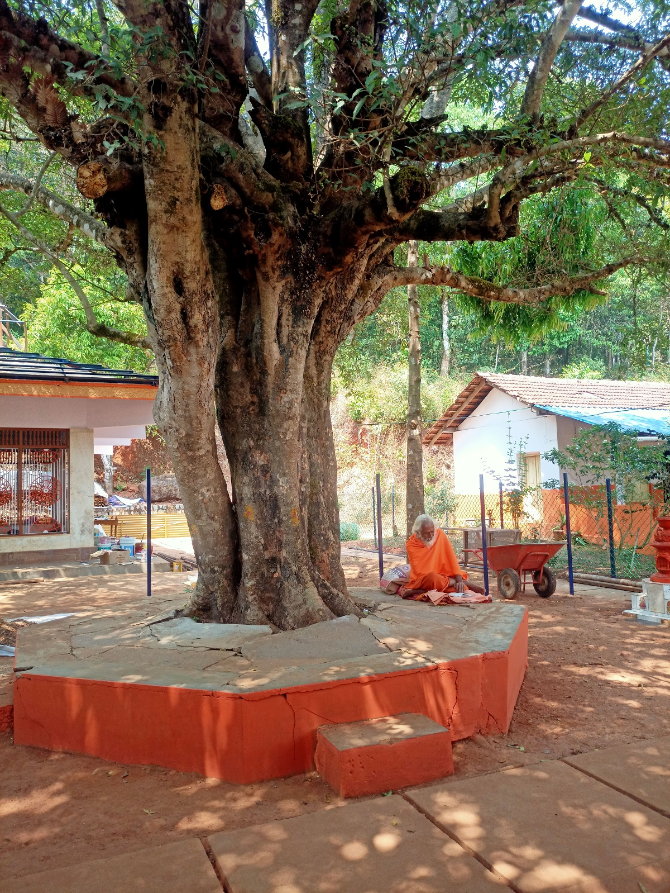
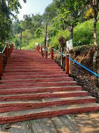
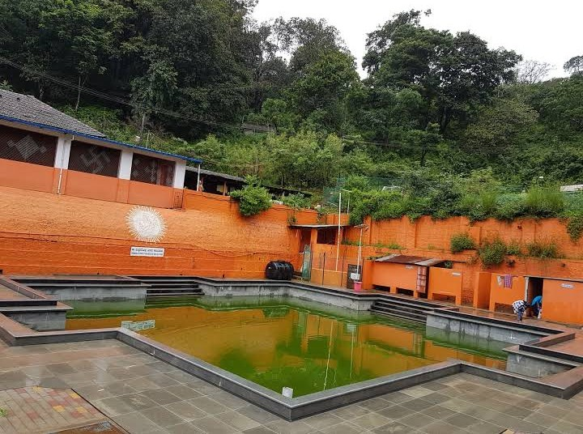
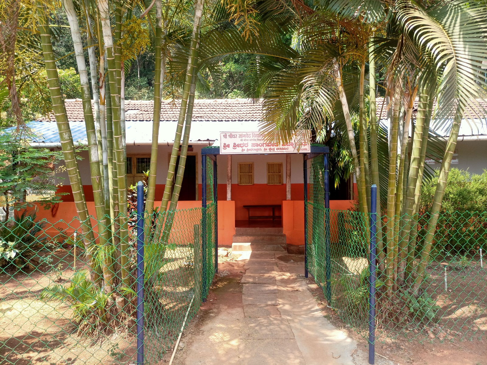
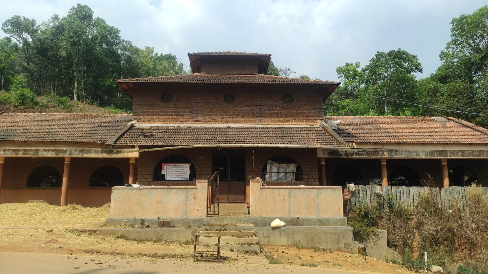
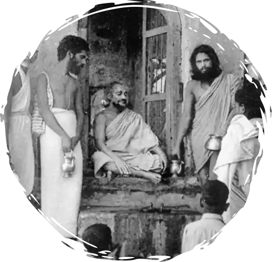

Varadpura is situated in the Shimoga district of Karnataka state, 5 kilometres from Sagar. The Sahyadri mountain range encompasses the region. Shridhar Swami decided to spend his time in seclusion in this holy location because it was the home of the revered elder in the clan where Swamiji was born.
The sacred hermitage was built in 1961 by "The Great Sage of Our Times," a man famous for his occult abilities and spiritual accomplishments. Like Shankaracharya, Bhagawan Shridharajee was a brilliant philosopher and holy Sage with incredible vitality. He was an odd combination of a philosopher and a scholar, an atheist and a mystic, a poet and a revered saint, and on top of all that, he was also a reformer who put theory into practise and a skilled organiser. He had a significant following throughout India.
Sri Shreedhara Swamiji

Sri Shreedhaswami was born in Lad Chincholi, Karnataka, India on December 7, 1908 as the son of kamalabai and Narayan Rao Deglurkar. He was the youngest of five children; Govind, the oldest, had passed away before he was born.Shridhar, who is naturally calm and kind, showed an immediate affinity for Ram bhakti. His mother encouraged him to sing the name of Lord Ram continuously.
One of the most significant spiritual leaders of contemporary India, Sridharaswami Maharaj, whose pre-monastic name was Shreedhar Deglurkar, devoted his life to uplifting the spirits of hundreds of thousands of Indians.
Hinduism had been decimated by vices like casteism, sectarianism, and traditional ritualism. Shri Shreedharswami, who was widely regarded as an incarnation of Dattatreya, fought tirelessly to restore it.
Additionally, he restored the Vyas Rushi-built Durgamba Temple, which is close to the ashram. Despite the serene surroundings, Varadpur experienced a severe water shortage. When Shridhar Swami realised this, he used the thumb of his right leg to dig a small hole in the earth. A tiny stream of water broke the surface and started to descend. This stream, also known as the Shridhar tirtha, continues to run vigorously, providing an abundant supply of water for the populace.





Hightlights of Shridharashrama
When we enter the ashram the first thing we can see is the Shreedhara-thirtha.
It is said that this is the same stream of water which started flowing when Sri Shreedhara swamiji digged the earth with his right leg thumb.
The pilgrimage is very clean and well mantianed by the organization.
Shree Durgamba Devi Temple is situated on a hilltop, there a staircase to reach it. There are many thoughts of Sri Shreedhara swami placed along the staircase. These thoughts are guides that show us the way of life.
The Durgamba Devi temple on the hill is very beautiful, the view around the hill from that place is mesmerizing. The story of sri shreedhara swami is placed arround the temple named shridhara-charithe, the story includes all the major incidents of the life of sri shreedara swami.
We were lucky enough to have the prasada given by the ashrama, the prasada was very tasty and dining hall was Hygienic. All male visitors had to remove their shirts to enter the dining hall.

Vidya
Indian Sanatana Dharma – Culture – Source of Traditions – Vedas, Shastra Puranas, Poems and Sanskrit Language. Sri Sridhara Sadguru, who felt that the study of these and the religious and spiritual awakening of Parijna was essential, started a gurukula system school teaching Veda, Vedanga and Sanskrit lessons in the ashram.

Goushala
The service of the cows who are the mother of the world should be done daily. The feeling that prosperity will increase with this good work is the source of Gopal's Kayaka in the ashram. Sri Sridhara Sadguru used to give alms only after performing Gopuja and offering Gograsa. Even now, cows of various breeds are in the cowshed of the ashram and are serving the devotees.

Nithyannadana
The sufferings of devotees who come to the pure atmosphere of an ashram are not only temporarily resolved, but they must attain eternal bliss as sattviks. For this, Shri Sridharasadguru, who classically thought that the consumption of sattvik food is very important, arranged to make Annaprasa meal available free of cost to all the devotees who came to the ashram. It continues even today.